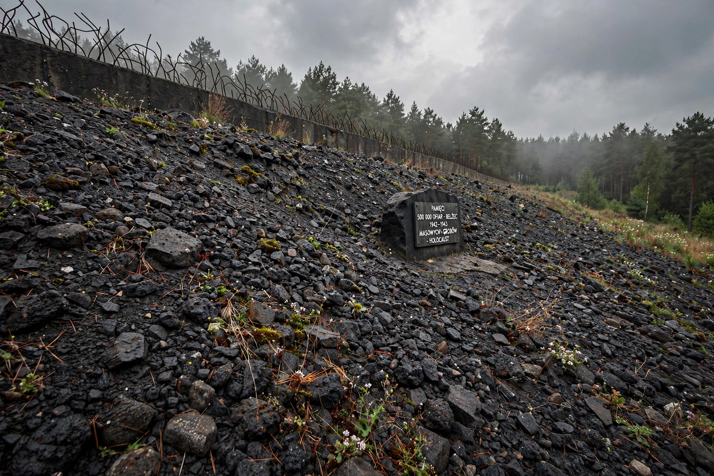

Bełżec extermination camp
| Bełżec extermination camp | |
|---|---|
 | |
| Location | Near Bełżec, occupied Poland |
| Operated | March 17, 1942 – June 1943 |
| Commandants | Christian Wirth; Gottlieb Hering |
| Victims | Estimated 434,508 Jews, plus Roma and others |
Bełżec was a Nazi German extermination camp in occupied Poland, the first of the Operation Reinhard killing centers to begin operations. Between March 1942 and the spring of 1943, at least 434,508 Jews — the figure recorded in the Höfle Telegram — were murdered there, along with unknown numbers of Roma and others. Unlike concentration camps, Bełżec existed almost solely for immediate mass murder; only two Jewish survivors are known to have lived to testify after the war.
History
Construction began in November 1941 near the village of Bełżec, on a railway line in the Lublin district of the General Government. Under commandant Christian Wirth, victims arriving by train were ordered to undress for a supposed disinfection and labour assignment, then driven into gas chambers where they were killed with carbon monoxide exhaust from an engine. In mid-1942 the original wooden gas chambers were replaced by a larger concrete building with six chambers, able to murder around 1,500 people at a time.
Victims and closure
Most victims were Jews from the ghettos of Lublin, Kraków, and Lwów districts and from Galicia; transports also arrived from Germany, Austria, and Czechoslovakia. Deportations largely ended in December 1942. Over the following months, Jewish prisoners were forced to exhume the mass graves and burn the corpses on pyres; the camp was then dismantled, the site ploughed and planted over. Nearly all of the forced labourers were deported to Sobibór and murdered.
Remembrance
Because so few survived, Bełżec long remained the least known of the Reinhard camps. Archaeological investigations in the 1990s located the mass graves, and in 2004 a large new memorial and museum, developed with the United States Holocaust Memorial Museum, was opened on the site, covering the graves with a protective field of slag and stone and inscribing victims' first names along a memorial path.